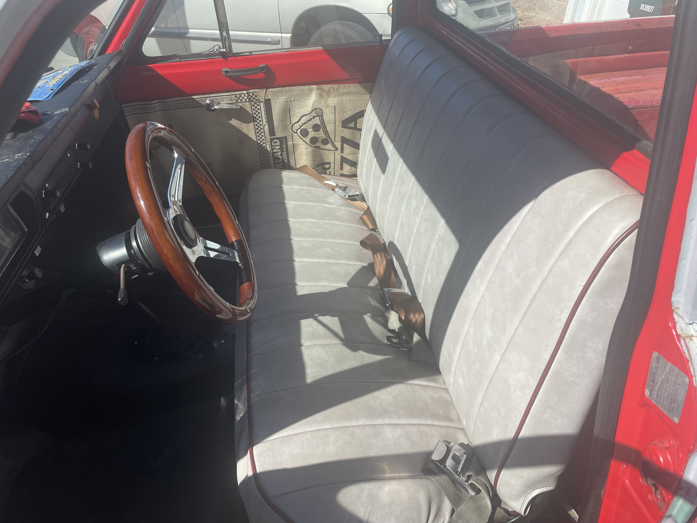
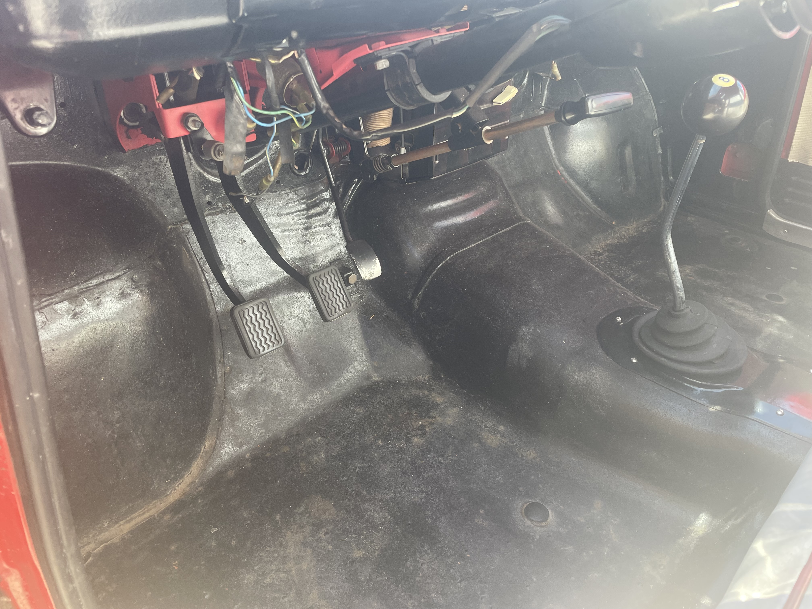
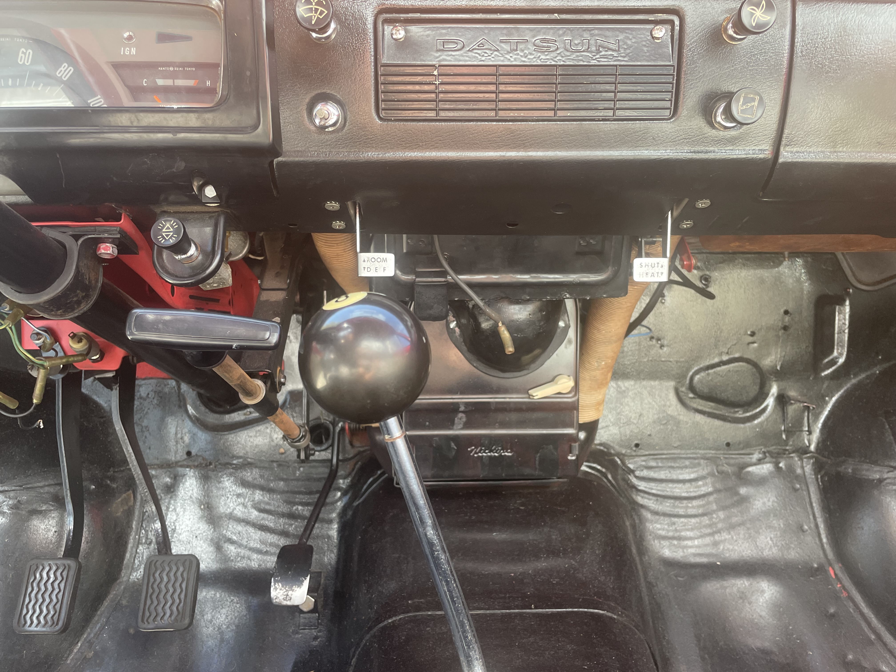
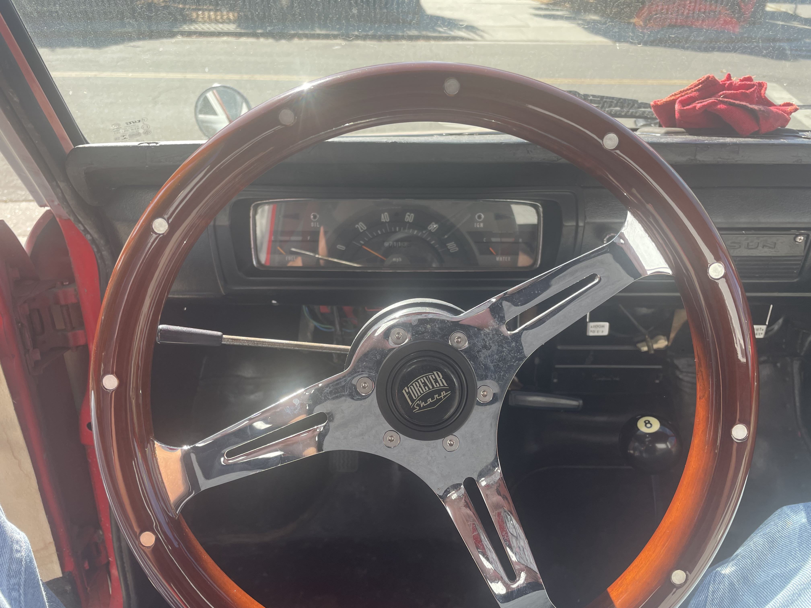
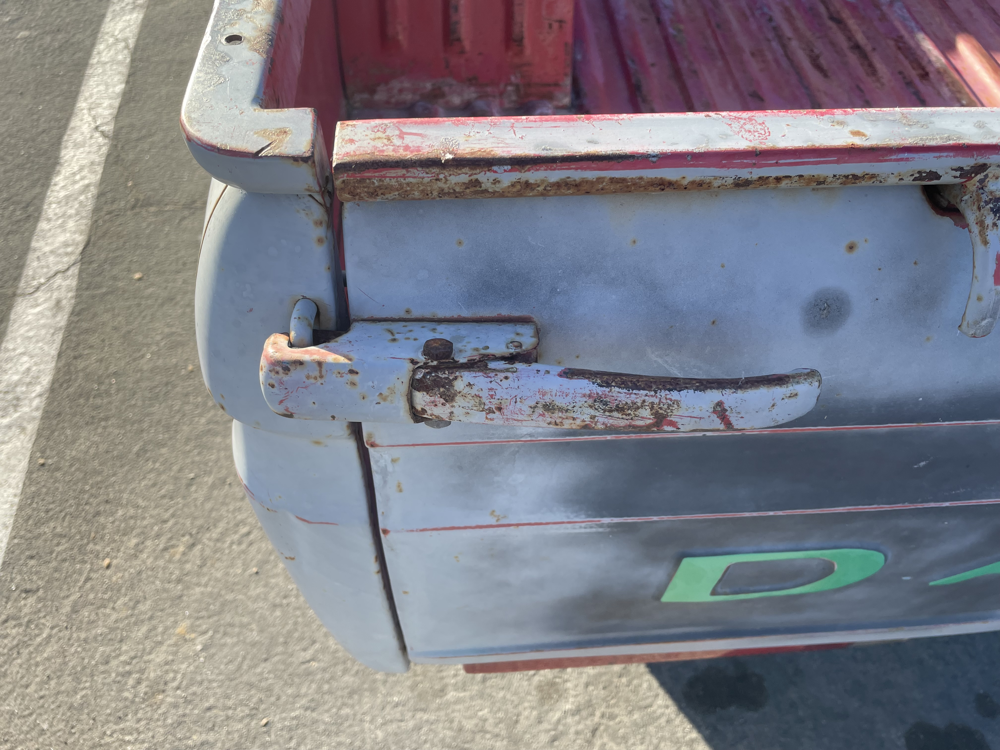
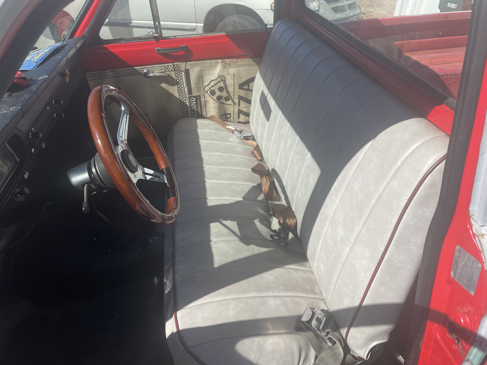
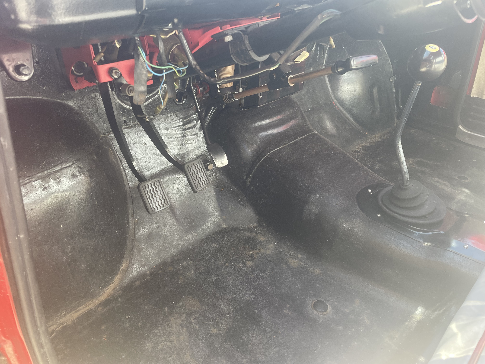
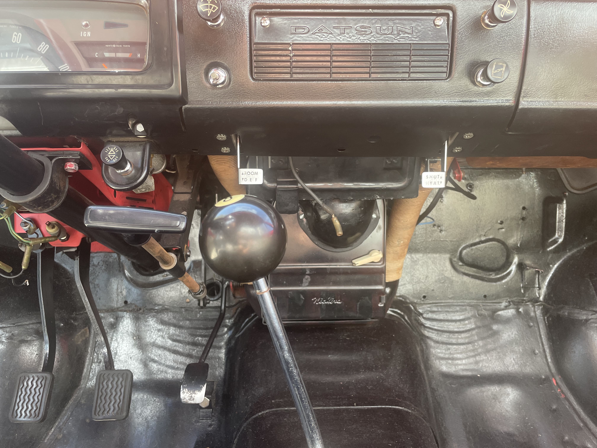
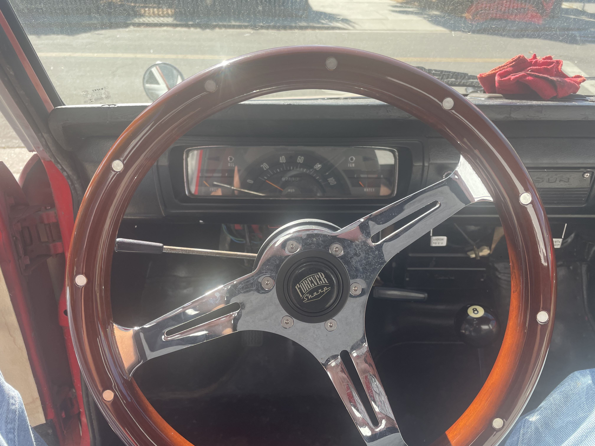
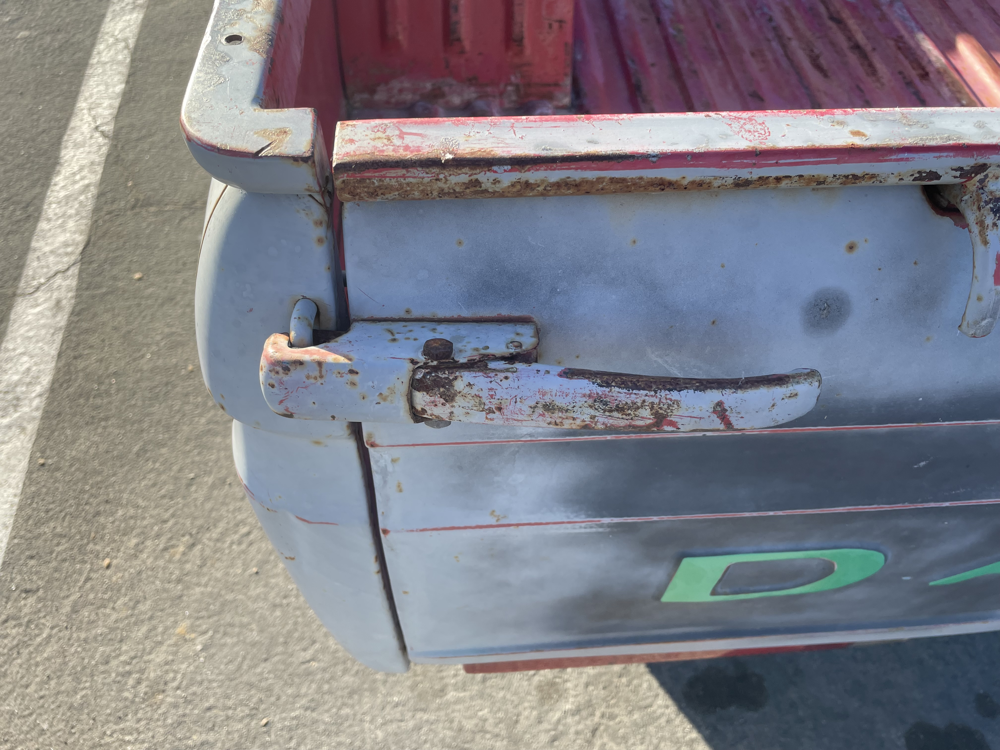

The 1971 Datsun 521 was my first project vehicle. Its mechanical simplicity allowed me to deeply understand the function and history of each subsystem on the truck. The project spanned from 2020 to 2024, when I sold it to finance my study abroad in Argentina.
Over the years, I serviced nearly every mechanical and electrical system. Major work included upgrading the carburetor from a single 16mm barrel to a dual 38mm Weber-style carburetor, boring the intake manifold for improved airflow, replacing the radiator and head gasket, welding structural floor repairs, repairing seat springs, restoring the tailgate handle, repainting the roof and tailgate lettering, replacing the windshield, and countless other repairs.
This truck was my dream vehicle. One day, I intend to own another — perhaps even this same one again.
 








